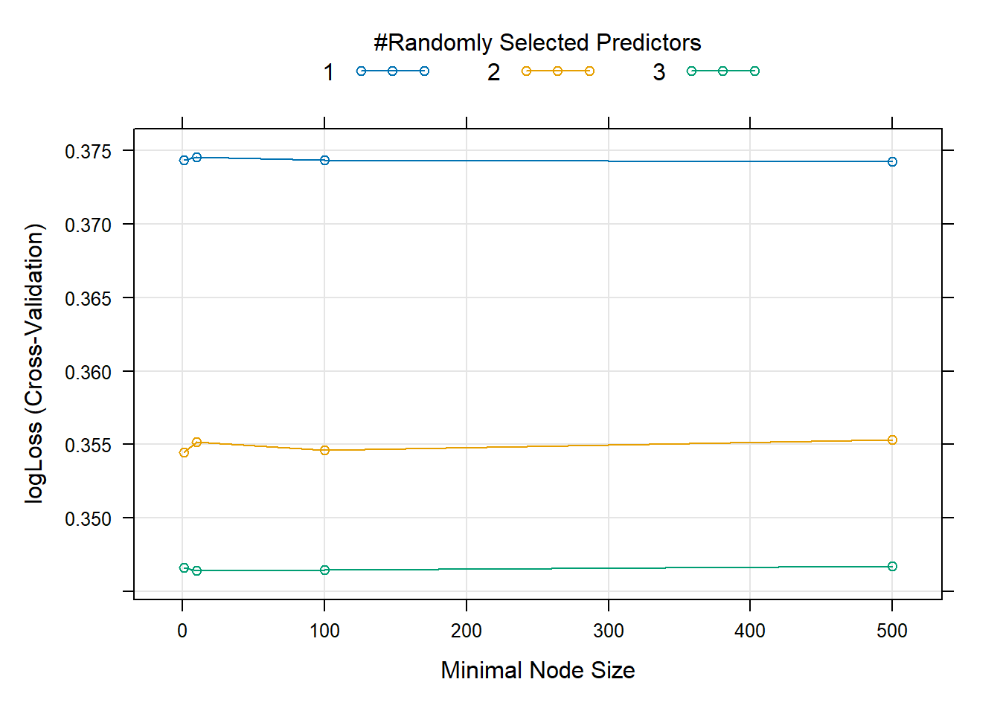

library(tidyverse)
library(dplyr)
library(caret)
library(caTools)
library(stepPlr)
library(ranger)
library(e1071)Final Project
Diabetes Health Indicators - Modeling
Introduction
The diabetes binary health indicators file is a subset of 22 variables and 253,690 responses to questions asked of as part of the Behavioral Risk Factor Surveillance System (BHFSS) survey conducted in 2015.
In our EDA we identified that the variables of HighBP, HighCholesterol, BMI, GeneralHealth, BadMentalHealth, BadPhysicalHealth, and Age each had a relationship with HasDiabetes that could be used to predict the outcome of HasDiabetes. Our EDA identified that the variables Stroke, HeartDiseaseorAttack, PhysActivity, ConsumesFruits, ConsumesVeggies, HeavyAlcoholUse, ExpensiveTreatment, DifficultyWalking, and Income each had a relationship with HasDiabetes where HasDiabetes would be a predictor variable for them. This is not what we’re tyring to model so the varaibels will be excluded. We also identified that variables HasHealthcare, and Education did not have a distinguishable relationship with HasDiabetes. BMI appeared to be the only variable with outliers. These were removed from the data set before conducting EDA on the remaining variables.
The goal of our modeling is to predict HasDiabetes using the caret package and logLoss as the metric for evaluation of how well our models predict the actual value of **HasDiabetes*. Log loss is the negative average of the natural log of each observation’s difference from the predicted probability. Log loss provides a metric for determining how much error exists in a classification prediction model in a similar way MSE determines how much error exists in a linear regression prediction model. What makes log loss a preferred method of comparison over model accuracy is that it takes predicted probability into account when determining average error in a classification prediction model while accuracy only accounts for the proportion of correct/incorrect predictions created by the model.
Before training our data for generating our prediction models, we will first need to establish the library of functions we will use to split our data set and process the observations through our prediction models.
Next, we will read in the data file, remove variables identified as not suitable for prediction modeling during our EDA, remove outliers, update variable names, ensure the classification variables are changed to factors, and re-code the factor variables for use in the prediction modeling functions . The resulting data frame from these operations is
# Read in the raw data file, select variables for modeling, set-up variable
# names, remove outliers. This is done to ensure the modeling page works
# independent of the EDA page.
diabetes_df_model <- read.csv("./FinalProjectRawData/diabetes_binary_health_indicators_BRFSS2015.csv")
diabetes_df_model <- as_tibble(diabetes_df_model)
diabetes_df_model <- diabetes_df_model |>
select(Diabetes_binary, HighChol, BMI, PhysHlth, Age) |>
filter(BMI >= 13.5) |>
filter(BMI <= 50 ) |>
dplyr::rename("HasDiabetes" = Diabetes_binary,
"HighCholesterol" = HighChol,
"BadPhysicalHealth" = PhysHlth) |>
dplyr::mutate(across(c(1, 2, 5), factor))
diabetes_df_model$HasDiabetes <- fct_recode(diabetes_df_model$HasDiabetes, No = "0", Yes = "1")
diabetes_df_model$HighCholesterol <- fct_recode(diabetes_df_model$HighCholesterol, No = "0", Yes = "1")
diabetes_df_model$Age <- fct_recode(diabetes_df_model$Age, Age1="1", Age2="2", Age3="3", Age4="4", Age5="5", Age6="6", Age7="7", Age8="8", Age9="9", Age10="10", Age11="11", Age12="12", Age13="13")
str(diabetes_df_model)tibble [251,478 × 5] (S3: tbl_df/tbl/data.frame)
$ HasDiabetes : Factor w/ 2 levels "No","Yes": 1 1 1 1 1 1 1 1 2 1 ...
$ HighCholesterol : Factor w/ 2 levels "No","Yes": 2 1 2 1 2 2 1 2 2 1 ...
$ BMI : num [1:251478] 40 25 28 27 24 25 30 25 30 24 ...
$ BadPhysicalHealth: num [1:251478] 15 0 30 0 0 2 14 0 30 0 ...
$ Age : Factor w/ 13 levels "Age1","Age2",..: 9 7 9 11 11 10 9 11 9 8 ...We see from the structure of our subset that the data frame was converted properly and we’re ready to prepare the data for prediction modeling. Next we will split the data frame into training and test subsets. We will use 70% of the data set for the training model and 30% of the data set for testing our model.
# 70/30 split for training/testing subsets
# Use set.seed() to make things reproducible
set.seed(1)
# Create the model index for partitioning the data
modelingIndex <- createDataPartition(diabetes_df_model$HasDiabetes, p=.7, list=FALSE)
# Create the training set
modelingTrain <- diabetes_df_model[modelingIndex, ]
# Create the test set
modelingTest <- diabetes_df_model[-modelingIndex, ]
# Output the dimensions to ensure the data subsets populated correctly
print(list("Traning Data"=dim(modelingTrain), "Test Data"=dim(modelingTest)))$`Traning Data`
[1] 176035 5
$`Test Data`
[1] 75443 5Review of the dimensions of both subsets shows that we successfully split the data and are ready to start generating our prediction models.
Regardless of type, each training model generated will be pre-processed for centering and scaling and will have training control parameters of 5-fold cross-validation with classProbs set to TRUE and the summaryFunction set to mnLogLoss.
Logistic Regression Models
The first prediction model type we’re going to generate is a logistic regression model. Logistic regression is the estimated probability of an event occurring when considering other variables involved. It is widely used in prediction modeling when a dependent variable of interest has binary outcomes. For our prediction model, we will be the estimating the probability of a PT having diabetes with consideration of the variables HighCholesterol, BMI, BadPhysicalHealth, and Age to predict a “Yes” response in the HasDiabetes variable.
There are several different logistic regression models (LRMs) that are in the caret package. Because of this, we are going to select three types of LRMs and compare them to determine which one we will use for comparison against a Classification Tree and Random Forest prediction models that we will generate later in this report. For each logistic regression model, we used 5-fold cross validation.
The first logistic regression model we’re going to train is the Boosted Logistic Regression Model.
set.seed(1)
boostedLogistic <- train(HasDiabetes ~ HighCholesterol + BMI + BadPhysicalHealth + Age ,
data=modelingTrain,
method="LogitBoost",
metric="logLoss",
preProcess=c("center", "scale"),
trControl = trainControl(method = "cv",
number = 5,
classProbs = TRUE,
summaryFunction = mnLogLoss),
tuneGrid = expand.grid(nIter = seq(1, 30, by = 1))
)
plot(boostedLogistic)
We see from the graph of the outputs for each iteration’s logLoss that there is a sizable variance between each, where the lowest logLoss occurs at iteration 12, which is confirmed in the below data output.
print(boostedLogistic)Boosted Logistic Regression
176035 samples
4 predictor
2 classes: 'No', 'Yes'
Pre-processing: centered (15), scaled (15)
Resampling: Cross-Validated (5 fold)
Summary of sample sizes: 140828, 140829, 140828, 140827, 140828
Resampling results across tuning parameters:
nIter logLoss
1 0.4510127
2 0.3695666
3 0.3887616
4 0.3585300
5 0.4102161
6 0.3557310
7 0.4002803
8 0.3480972
9 0.4059628
10 0.3559596
11 0.4003597
12 0.3454173
13 0.4101367
14 0.3584109
15 0.3961064
16 0.3456459
17 0.4102161
18 0.3557310
19 0.4002803
20 0.3480972
21 0.4059628
22 0.3559596
23 0.4003597
24 0.3454173
25 0.4101367
26 0.3584109
27 0.3961064
28 0.3456459
29 0.4102161
30 0.3557310
logLoss was used to select the optimal model using the smallest value.
The final value used for the model was nIter = 12.The second logistic regression model we’re going to train is the Bayesian Generalized Linear Model.
set.seed(1)
bayesianLogistic <- train(HasDiabetes~.,
data=modelingTrain,
method="bayesglm",
preProcess=c("center", "scale"),
trControl = trainControl(method = "cv",
number = 5,
classProbs = TRUE,
summaryFunction = mnLogLoss)
)
print(bayesianLogistic)Bayesian Generalized Linear Model
176035 samples
4 predictor
2 classes: 'No', 'Yes'
Pre-processing: centered (15), scaled (15)
Resampling: Cross-Validated (5 fold)
Summary of sample sizes: 140828, 140829, 140828, 140827, 140828
Resampling results:
logLoss
0.3391554There were no results to plot of this model because there are no tuning parameters for the bayesglm function. We see from the above data output that the logLoss for the Bayesian GLM is 0.3391554.
The third logistic regression model we’re going to train is the Generalized Linear Model.
set.seed(1)
generalizedLogistic <- train(HasDiabetes~.,
data=modelingTrain,
method="glm",
preProcess=c("center", "scale"),
trControl = trainControl(method = "cv",
number = 5,
classProbs = TRUE,
summaryFunction = mnLogLoss)
)
print(generalizedLogistic)Generalized Linear Model
176035 samples
4 predictor
2 classes: 'No', 'Yes'
Pre-processing: centered (15), scaled (15)
Resampling: Cross-Validated (5 fold)
Summary of sample sizes: 140828, 140829, 140828, 140827, 140828
Resampling results:
logLoss
0.339156There were no results to plot of this model because there are no tuning parameters for the glm function. We see from the above data output that the logLoss for the Bayesian GLM is 0.339156.
Now that we have the logLoss established for each logistic regression, comparison of them shows
print(list("Comparison of Logistic Regression Model LogLoss"=t(data.frame("GLM"=generalizedLogistic$results$logLoss, "BayesianGLM"=bayesianLogistic$results$logLoss, "Boosted"=boostedLogistic$results$logLoss[12]))))$`Comparison of Logistic Regression Model LogLoss`
[,1]
GLM 0.3391560
BayesianGLM 0.3391554
Boosted 0.3454173that the Bayesian Generalized Logistic Model (bayesglm) performed the best. We will use this model for overall comparison between the different prediction model types.
Classfication Tree
Classification tree models are developed with the goal of predicting a group membership for a response variable of interest. The classification tree makes an initial division into regions, then subdivides the regions into smaller regions, until each observation is assigned to a terminal node (endpoint with no further subdivisions). It is often times important to “prune” the tree, which is a method of reducing the number of nodes in the tree in order to not overfit the model to the data.
For our Classification Tree, we will use rpart to fit the training data and use varying values for the complexity parameter (cp) ranging from “0” to “0.1” in order to identify the cp that produces the model with the lowest amount of logLoss.
set.seed(1)
cartTree <- train(HasDiabetes~.,
data=modelingTrain,
method="rpart",
preProcess=c("center", "scale"),
trControl = trainControl(method = "cv",
number = 5,
classProbs = TRUE,
summaryFunction = mnLogLoss),
tuneGrid = data.frame(cp = seq(0, 0.1, by = 0.005))
)
plot(cartTree)
Review of the Complexity Parameter plot shows that the initial complexity parameter of “0.000” has the lowest amount of logLoss.
The below output CART output confirms the complexity parameter of “0.000” had the lowest logLoss with a value of 0.3564431.
print(cartTree)CART
176035 samples
4 predictor
2 classes: 'No', 'Yes'
Pre-processing: centered (15), scaled (15)
Resampling: Cross-Validated (5 fold)
Summary of sample sizes: 140828, 140829, 140828, 140827, 140828
Resampling results across tuning parameters:
cp logLoss
0.000 0.3564431
0.005 0.4008598
0.010 0.4008598
0.015 0.4008598
0.020 0.4008598
0.025 0.4008598
0.030 0.4008598
0.035 0.4008598
0.040 0.4008598
0.045 0.4008598
0.050 0.4008598
0.055 0.4008598
0.060 0.4008598
0.065 0.4008598
0.070 0.4008598
0.075 0.4008598
0.080 0.4008598
0.085 0.4008598
0.090 0.4008598
0.095 0.4008598
0.100 0.4008598
logLoss was used to select the optimal model using the smallest value.
The final value used for the model was cp = 0.Random Forest
A Random Forest tree is a Classification Tree that does not use all predictor variables when generating a model. Instead, it uses a random subset of predictors for each bootstrap sample it generates to create a tree fit. The Random Forest tree prevents bias in the model where it does not always include the strongest predictor in the tree like a standard Classification Tree would.
For our Random Forest Tree, we used the ranger caret package in R. Ranger is a computationally faster method over random forest. It has tuning parameters of mtry, splitrule, and min.node.size that we will use to determine the best model for comparison. While it is standard to take the square root of the number of predictor variables to determine our mtry value, we only have four so we will set mtry to compare use of 1, 2, and 3 of our predictor variables in order to determine which parameter is the best fit for prediction modeling. We will not use all four predictor variables because that is the same as a Classification Tree model, which defeats the purpose of generating a Random Tree model. We will set splitrule to “extratrees” to replicate the random forest of generating effect in ranger. We will compare min.node.size values of “1”, “10”, “100”, and “500” to determine which one is more accurate while saving computation time. The larger the value of min.node.size, the less time it takes to generate the trees.
set.seed(1)
randomForest <- train(HasDiabetes~.,
data=modelingTrain,
method="ranger",
preProcess=c("center", "scale"),
verbose = FALSE,
trControl = trainControl(method = "cv",
number = 5,
classProbs = TRUE,
summaryFunction = mnLogLoss),
tuneGrid = expand.grid(mtry = c(1,2,3),
splitrule="extratrees",
min.node.size=c(1, 10, 100, 500))
)
plot(randomForest)
Review of the Minimal Node Size Plot we see that increasing the number of predictor variables greatly reduced the amount of logLoss in the model, with mtry of “3” having the lowest values.
The below Random Forest output shows that the min.node.size of “10” is optimal with mtry of “3” for prediction modeling with a value of 0.3464193.
print(randomForest)Random Forest
176035 samples
4 predictor
2 classes: 'No', 'Yes'
Pre-processing: centered (15), scaled (15)
Resampling: Cross-Validated (5 fold)
Summary of sample sizes: 140828, 140829, 140828, 140827, 140828
Resampling results across tuning parameters:
mtry min.node.size logLoss
1 1 0.3743224
1 10 0.3745156
1 100 0.3743105
1 500 0.3742334
2 1 0.3544900
2 10 0.3551585
2 100 0.3546264
2 500 0.3553097
3 1 0.3466373
3 10 0.3464193
3 100 0.3464740
3 500 0.3467557
Tuning parameter 'splitrule' was held constant at a value of extratrees
logLoss was used to select the optimal model using the smallest value.
The final values used for the model were mtry = 3, splitrule = extratrees
and min.node.size = 10.Final Model Selection
In order to compare the three best models, we will first need to run the training models we selected with their best fit tuning parameters as identified earlier in this report.
set.seed(1)
#---------- produce models using identified best fit tuning params ----------#
# selected logistic regression model
bayesianLogisticComp <- train(HasDiabetes~.,
data=modelingTrain,
method="bayesglm",
preProcess=c("center", "scale"),
trControl = trainControl(method = "cv",
number = 5,
classProbs = TRUE,
summaryFunction = mnLogLoss)
)
# selected classification tree model
cartTreeComp <- train(HasDiabetes~.,
data=modelingTrain,
method="rpart",
preProcess=c("center", "scale"),
trControl = trainControl(method = "cv",
number = 5,
classProbs = TRUE,
summaryFunction = mnLogLoss),
tuneGrid = data.frame(cp = 0)
)
# selected random forest model
randomForestComp <- train(HasDiabetes~.,
data=modelingTrain,
method="ranger",
verbose = FALSE,
preProcess=c("center", "scale"),
trControl = trainControl(method = "cv",
number = 5,
classProbs = TRUE,
summaryFunction = mnLogLoss),
tuneGrid = expand.grid(mtry = 3,
splitrule="extratrees",
min.node.size=10)
)Next we will generate the model predictions, test the predictions for accuracy, and finally compare the accuracy results of each model to one another.
set.seed(1)
#---------- predict and validate each model using confusion matrix ----------#
# generate model predictions
bayesianLogisticComp_train_pred <- predict(bayesianLogisticComp, newdata = modelingTest)
cartTreeComp_train_pred <- predict(cartTreeComp, newdata = modelingTest)
randomForestComp_train_pred <- predict(randomForestComp, newdata = modelingTest)
# validate the accuracy of the predicton agains the test data set
bayesianLogisticComp_accuracy <- confusionMatrix(bayesianLogisticComp_train_pred, modelingTest$HasDiabetes)
cartTreeComp_accuracy <- confusionMatrix(cartTreeComp_train_pred, modelingTest$HasDiabetes)
randomForestComp_accuracy <- confusionMatrix(randomForestComp_train_pred, modelingTest$HasDiabetes)
# frame the results for comparison
modelComps <- t(data.frame("BayesianGLM"=bayesianLogisticComp_accuracy$overall[1], "RPart"=cartTreeComp_accuracy$overall[1], "RandomForest"=randomForestComp_accuracy$overall[1]))
# output the results
print(list("Comparison: Prediciton Model Accuracy"=modelComps))$`Comparison: Prediciton Model Accuracy`
Accuracy
BayesianGLM 0.8638310
RPart 0.8600268
RandomForest 0.8623729Review of the accuracy for each model when predicting the outcome of HasDiabetes shows that all three models have an accuracy rate of 86% or higher. The BayesianGLM model has the highest level of accuracy at just over 86.383% and will be selected for use in the API.
Acknoweldgements
Inspiration for approaching the Random Forest model training came from several of my fellow students and Professor Post in ST 558-651 SUM1 2024. Their contributions to the discussion forum topics related to the final project were paramount to my concept development in how to approach generating the Random Forest models in the most time efficient manner.